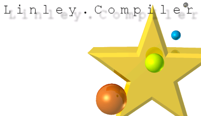
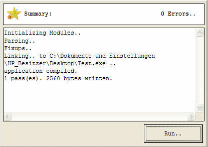
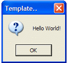

Linley documentation
Compiler Version : 4.5
Documentation : 0.1a

Table of contents:
Getting started
Keyword Reference manual
Operators
Symbols
Data types / User defined types (UDTs)
Dynamic link libraries (Dlls)
Links / About
Getting started:
Linley is a true x86 compiler/IDE, which combines some aspects of C and BASIC.
Linley is targeted to create small executables while keeping it fast, user-friendly and simple.
Linley's features:
Linley has a few special features which make it different from other compilers, some of them are listed here:
Small executable size (A “Hello World” program compiles to 4KB!!!)
Dynamic arrays
Easy to extend by using Dlls and Libraries
Built-in IDE
This an example of a simple “Hello World!” program:
application PE.GUI;
import MessageBox ascii lib "USER32.DLL",4;
entry
MessageBox(0,"Hello World!","Template..",$20);
end.
Copy and paste the code above in the IDE, Run the program, you should see that a Message-Box has appeared:

This indicates that your code has been compiled successfully, and a 2.50 KB executable has been
produced. Now click the run button:

This is the most simple win32 program you can compile in Linley; Most win32 programs are more complex.
Also, in all programs you need to supply an entry frame, an entry frame contains the statements that will
be executed when the program starts, like int main() in C
application PE.<type> [entry] [<entryframe>]
type = CUI (console) or GUI (Graphical user interface)
entry = Optional – use this to specify an entry frame
[<entryframe>] = Optional – name of the entry frame
If you don't include an entry frame then the entry frame will default to entry
as in the above example.
Console programs:
Linley supports the creation of console programs. Note that you need to tell the compiler what kind
of program you're compiling, if you look at the above code you'll notice that the first line is:
application PE.GUI;
which tells the compiler that we are compiling a GUI application (Graphical User Interface),
However, there is another case for console programs:
application PE.CUI;
This tells the compiler that we are compiling a CUI application (Console User Interface),
Linley has a special Library for use with console programs
Here is an example console program demonstrating Linley's console functions „Csimple.lnl“:
application PE.CUI;
include "Windows.inc","Console.inc";
entry
Console.Init("Linley CUI");
Console.Color(FOREGROUND_BLUE|FOREGROUND_GREEN| _
FOREGROUND_RED|FOREGROUND_INTENSITY| _
BACKGROUND_BLUE);
Console.Write("Linley Compiler Console Application .. \n");
Console.Color(FOREGROUND_RED|FOREGROUND_GREEN| _
FOREGROUND_BLUE);
Console.Write("Press enter to exit.. ");
Console.Read();
Console.Free();
end.
Console functions:
Console functions are included in the file Console.inc Make sure you include this file in the beginning
of your code if you are going to use these functions
Console.Init (string stitle[256])
Initializes a console window with the selected title (caption), the length of the title string must not
exceed 256 bytes (characters)
Console.Color (dword dwColor)
Sets the Foreground and Background colors for the console.
This must be at least one or a combination of these values:
|
Constant |
Effect |
Constant Value |
|---|---|---|
|
FOREGROUND_RED |
RED Foreground |
4 |
|
FOREGROUND_GREEN |
GREEN Foreground |
2 |
|
FOREGROUND_BLUE |
BLUE Foreground |
1 |
|
BACKGROUND_RED |
RED Background |
40 |
|
BACKGROUND_GREEN |
GREEN Background |
20 |
|
BACKGROUND_BLUE |
BLUE Background |
10 |
So using FOREGROUND_GREEN|BACKGROUND_RED
will change the text color to RED and the the Background color to BLUE
“|” is the bitwise OR operator for more info about it, see the keywords/operators section
Console.Write (string sout[256])
Writes text to the console, the length of the written text must not exceed 256 bytes
string Console.Read ()
Gets text input from the user, similar to the BASIC Input statement.
Returns a string containing the read data.
Console.Free ()
Frees the resources and the text buffer allocated to the console.
More About GUI Programs:
GUI Programs are a lot more complex than console programs, the only way (until now) to write this kind
of programs in Linley is to use pure win32 API, Linley supports the win32 API 100%
WIN32 API Include files/Libraries:
Win32a.inc – Standard Windows functions
Windows.inc – Standard Windows functions (Same as above)
These files allow you to use all Windows functions i.e.: Kernel32,User32,Gdi32 ..... etc.
If you don't want to include all of the Libraries, there's another way to do it:
Use the library keyword:
library "lib\user32.lib";
as with the include keyword, you are allowed to declare more libraries with one statement, Ex:
library "lib\user32.lib","lib\kernel32.lib","lib\gdi32.lib","lib\shell32.lib";
Now you can use the functions of these 4 libraries in your programs.
NOTE: If you want to know more about GUI programming, use the Win32 API help file or TheForgers
API Tutorial.
[TODO: Examples/API Programming weblinks]
Using C functions in Linley:
You can extend Linley by using the C functions included in the Dll „msvcrt.dll“,
It's not an API dll, but it's included in all Windows versions starting from Windows 98
If you want to use C functions in your code you need to include the Library „msvcrt“. Ex:
library "lib\msvcrt.lib";
Useful C Functions:
srand (int seed)
seeds the random number generator with an integer
int rand()
returns a random Integer
double floor (double x)
Rounds the value x and returns the resulting value
double ceil (double x)
Rounds the value x and returns the resulting value
string getenv (string varname)
Returns the value of the envoirment variable varname
[TODO: More functions to come]
Memory functions:
Linley comes with a few Memory functions in the Include file “Memory.inc”
int MemAlloc (dword size)
reserves or commits a region of pages with the size “size” in the virtual address space of the calling process. Memory allocated by this function is automatically initialized to zero.
If the function succeeds, the return value is the base address of the allocated region of pages (handle).
If the function fails, the return value is NULL
Memfree (dword Handle)
releases a region of pages within the virtual address space of the calling process (using the handle).
Inline assembler support:
You can use assembly instructions to optimize your programs, but you need FASM (Dos version)
installed to do it, you can use inline assembler in your programs by using:
iassembler {
...
...
assembler commands
...
...
}
Keyword reference manual:
-----------------------------------------------------------
Variables:
-----------------------------------------------------------
- Directive 'byte'
Reserves a byte.
byte <Identifier> [optional: = <Number>] ;
- Directive 'int'
Reserves a word.
int <Identifier> [optional: = <Number>] ;
- Directive 'dword'
Reserves a double word.
dword <Identifier> [optional: = <Number>] ;
- Directive 'string'
Reserves space for a string.
string <Identifier> '['<Size>']';
- Directive 'local'
Reserves a local variable.
local <byte|int|dword|string> <Identifier>;
- Directive 'const':
Defines a constant.
const <Identifier> = <Number|String> ;
Example : const test = 12
const testII = “Hello”
- Directive 'Frame'
Frames are functions in Linley,
You Begin a frame by typeing:
frame <identifier> ( <variableblock> );
....
....
statements
....
....
return <return value>;
end;
the return value is optional, if omitted the function returns nothing, this is called a VOID function in C
and a SUB in BASIC.
- Directive 'label'
Declares a label to the current offset (you can jump to the this label by using goto)
label <identifier> ;
ex: label beginn;
- Directive 'goto'
Jumps to a label defined previously by 'label', similar to the BASIC goto statement
goto <identifier>;
ex: goto beginn;
- 'if' statement
evaluates an expression
ex:
if ( <Expression> [=,!,<,>,<>,<=,>=] <Expression> ) {
-> [CodeBlock]
-> } [optional: else { [CodeBlock] }
- Directive 'type'
Defines types (structures)
type <Identifier> { [VariableBlock] }
ex:
Type person {
dword health;
string name[50];
}
- 'application' statement
Defines the program type and (Optionally), an entryframe
application PE.<type> [entry] [<entryframe>]
type = CUI (console) or GUI (Graphical user interface)
entry = Optional – use this to specify an entry frame
[<entryframe>] = Optional – name of the entry frame
- Statement 'return'
If raised inside a frame, frame execution is terminated and returns the expression.
return ( <Expression> ) ;
- Statement 'call'
Calls a frame.
call ( <Identifier> ) ;
Operators:
|
Operator |
Description |
Usage |
|---|---|---|
|
+ |
Addition |
Value+Value |
|
- |
Subtraction |
Value-Value |
|
* |
Multiplication |
Value*Value |
|
/ |
Division |
Value/Value |
|
% |
Modulus |
Value%Value |
|
| |
Bitwise OR |
Value|Value |
|
~ |
Bitwise eXclusive OR |
Value~Value |
|
& |
Bitwise AND |
Value&Value |
|
<> |
NOT |
<> Value |
|
= |
Assignment/Equality |
Value = Value |
Additionally, the following relational Operators may be used with the 'if' statement:
“<>” - Not (ex: if(variable <> 2)
“!=” - Not equal to (ex: if(variable != 0)
“>” - Greater
“<” - Smaller
“=>” - Greater or equal to
“<=” - Smaller or equal to
Symbols:
- '$' Symbol
Makes a number a HEX Value.
$<number>
- '@'
Pointer to a variable or a frame address
@<variable|Frame>
Linley's data types:
Linley supports the following data types:
|
Name |
Size |
Range |
|---|---|---|
|
byte |
1 byte |
0-255 |
|
Int (word) |
2 bytes |
0-65536 |
|
Dword (double word) |
4 bytes |
0-4294967294 |
|
String[<size>] |
size |
N/A |
User-defined-types (UDTs):
Linley support UDTs (Structs in C, and Types in BASIC)
You can create a structure by using the type statement.
Ex:
type person {
dword health;
string name[50];
}
Then you define your newly created structure this way: <structure> <identifier>
Ex:
person kinex;
person bill;
Now we have two structures, here is how we can access the members:
Ex:
kinex.health = 100;
kinex.name = "Robert Stock";
Dynamic link libraries (Dlls):
Dlls are useful libraries which contain functions that your program can use.
You can declare DLL function by using the import statement:
Ex:
import MessageBox ascii lib "USER32.DLL",4;
The syntax is: import <functionname> [alias] [<realname>] lib „<libname.ext>“,<numparams> ;
functionname = the EXACT name of the function (Case sensitive)
[alias] = Optional – use this to define the real name of the function if you named it anything else in <functionname>
[<realname>] = Optional – the real name of the function (see [alias] )
<libname.ext> = The complete name of the DLL with extension, this assumes that the DLL is located
in your \system directory
<numparams> = number of parameters that the function needs.
After that, you can call the function as you call a normal frame.
Ex:
MessageBox(0,"Hello World!","Template..",$20);
Links and credits:
Linley Website
Developer Forum